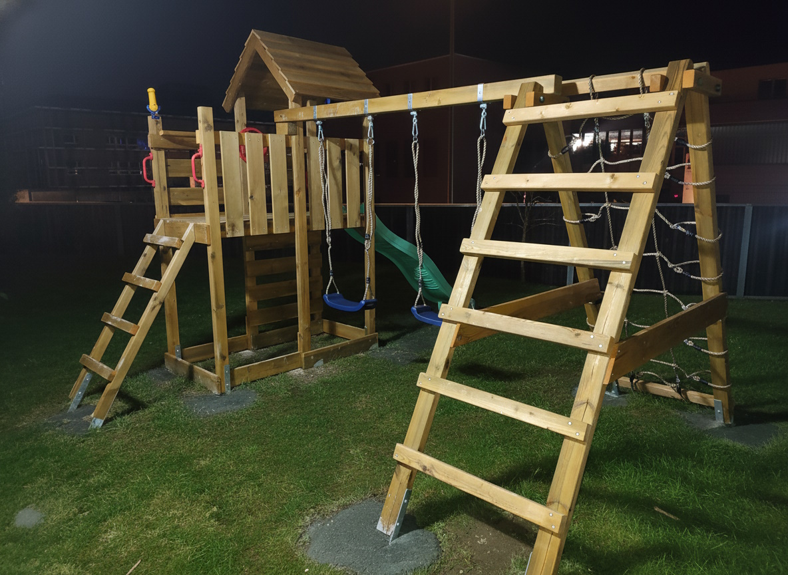
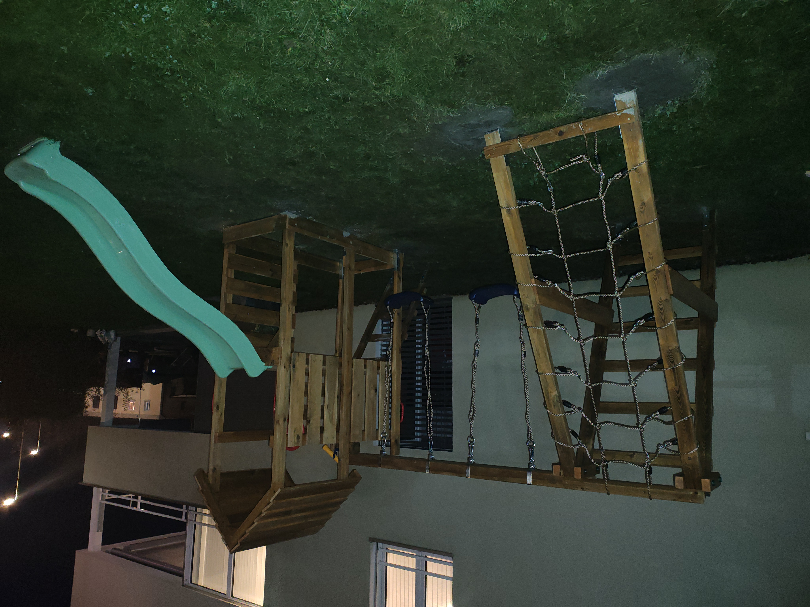
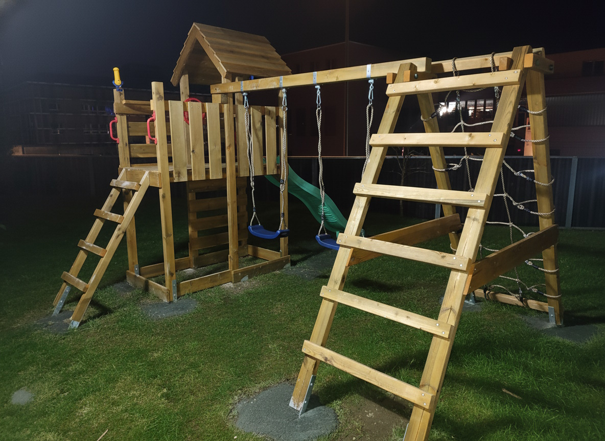
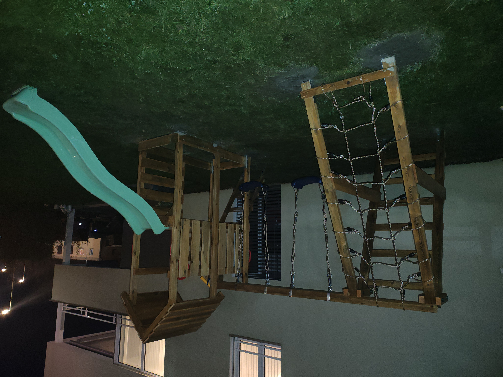

Montage von Spielanlagen, Spielhäusern & Gartenelementen
Diese Spielanlage wurde in einem Mehrfamilienhaus mit kleinem Garten in der Nähe von Zürich montiert. Mehrere Familien mit Kindern wollten einen sicheren Spielbereich direkt vor dem Haus, damit die Kinder draussen spielen können und trotzdem in Sichtweite der Eltern bleiben. Die Anlage wurde vom Kunden bei einem anderen Anbieter bestellt – wir haben die komplette Montage und Anpassung übernommen.
Vor Beginn der Arbeiten haben wir die Konstruktion auf Stabilität und mögliche Schwachstellen geprüft, die Punktfundamente richtig dimensioniert und die Verankerung geplant. Nach einer kurzen Abstimmung mit dem Auftraggeber wurde die Spielanlage angepasst, aufgebaut und dauerhaft im Boden verankert. Für einen langlebigen Schutz im Aussenbereich wurden die Holzteile mit einer Holzschutzlasur behandelt, damit die Anlage Sommer wie Winter der Witterung standhält.
Neben Spielanlagen übernehmen wir auch die Montage von gekauften Bausätzen, den Bau individueller Holzkonstruktionen im Garten und im Innenbereich: Spielhäuser, Gartenelemente, Sitzbänke, Terrassen, kleine Pergolen, Holzverkleidungen und ähnliches. Wir arbeiten vor allem im Kanton Zürich, sind aber bei Bedarf auch in anderen Regionen der Schweiz im Einsatz.
Bilder zu Garten- & Spielhausprojekten
 



Spielplatz oder Holzkonstruktion im Garten planen?
Wenn Sie im Kanton Zürich oder in der Schweiz eine Spielanlage, ein Spielhaus oder andere
Holzkonstruktionen im Garten oder im Haus montieren lassen möchten, unterstützen wir Sie gerne.
Wir übernehmen sowohl die Montage von vorhandenen Bausätzen als auch die Planung und Ausführung
individueller Lösungen.
Sie können uns über das Kontaktformular, per
E-Mail, via
WhatsApp oder
telefonisch unter +41 79 846 78 31 erreichen. Schicken Sie uns
gerne eine kurze Beschreibung oder eine Skizze – wir melden uns zeitnah mit passenden Vorschlägen.